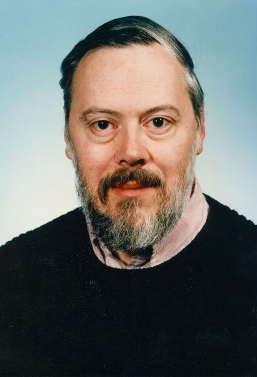

Dennis M. Ritchie

Father of C Programming Language
Dennis MacAlisar Ritchie
Here's a timeline of Dennis Ritchie's life:
- 1941 - Born in Bronxville, New York, U.S.
- 1963 - Ritchie earned his bachelor's degree in Physics from Harvard
- 1967 - Ritchie began working at the Bell Labs Computing Sciences Research Center
- 1968 - Defended his PhD thesis on Program Structure and Computational Complexity" at Harvard
- 1969 - Bell Labs dropped the Multics operating systems project in 1969. This prompted Ritchie to develop C programming language and, with Thompson, create the UNIX operating system.
- 1971 - Unix was released on November 3rd, 1971, opening a operating system to work on a variety of platforms with highly adapted quality.
- 1972 - Ritchie and Thompson's operating system was not functioning on the more advanced PDP-11 mini computer in 1971. This prompted Ritchie to create C programming lanuage. C programming lanuage grew to be very popular and is basis of all modern programming languages such as C++, Java and Python.
- 1973 - Ritchie and Thompson wrote UNIX using C programming language. This allowed for UNIX to work a wide variety of computers in a range of large and minicomputers and advanced to simple computers.
- 1983 - Ritchie along with Ken Thompson was awarded the A.M. Turing Award. It is a prestigious award and the top achievement in Computer Science. They recieved this award for, "their development of generic operating systems theory and specifically for the implementation of the UNIX operating system".
- 1988 - Ritchie was elected into the U.S National Academy of Engineering.
- 1990 - Ritchie was appointed the head of the System Software Research Department at Bell Labs.
- 1994 - Awarded the 1994 Computer Pioneer Award, "In recognition of contribution to the development of Unix".
- 1995 - Ritchie and his team released Plan 9 operating system. Plan 9 attempted to integrate graphics and networking into a Unix platform.
- 1996 - Ritchie and his team released the inferno Operating System. Inferno is a operating system for building distributed and networked systems on a large range of platforms and systems.
- 1999 - Richie and Thompson are awarded the U.S. National Medal of Technology Award from President Bill Clinton for inventing UNIX and C programming language.
- 2011 - Ritchie died on October 12, 2011, at the age of 70 at his home in Berkeley Heights, New Jersey.